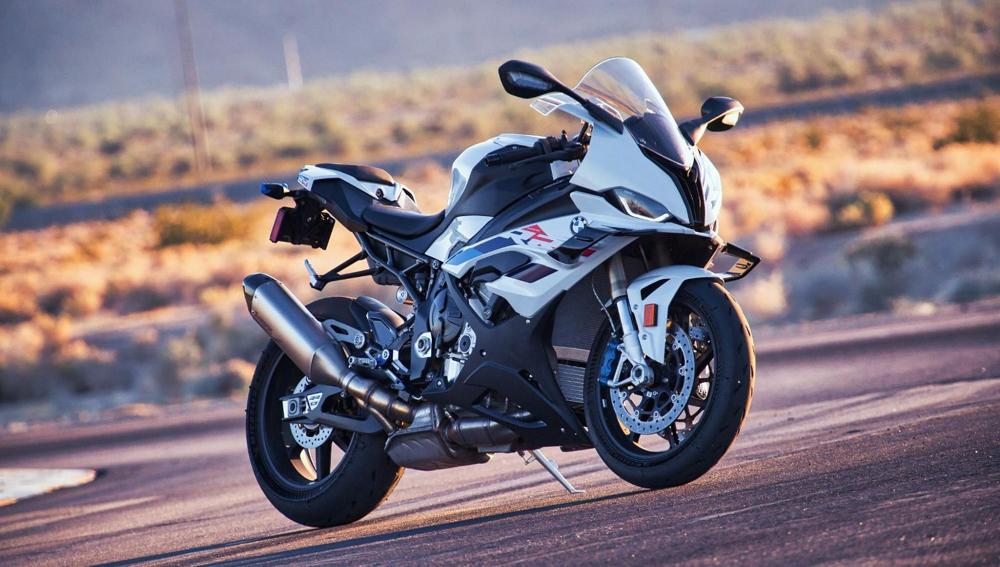
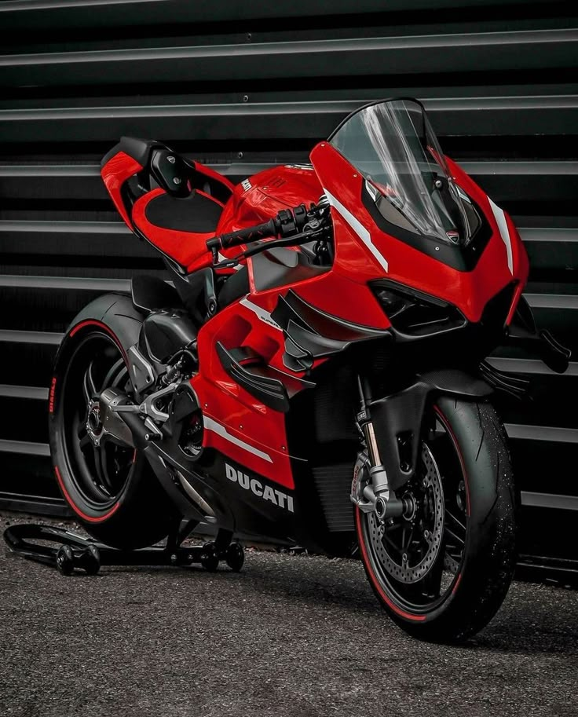
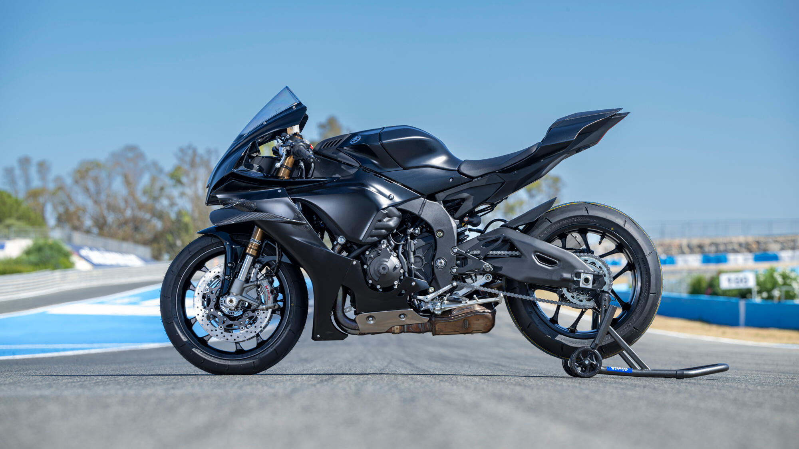
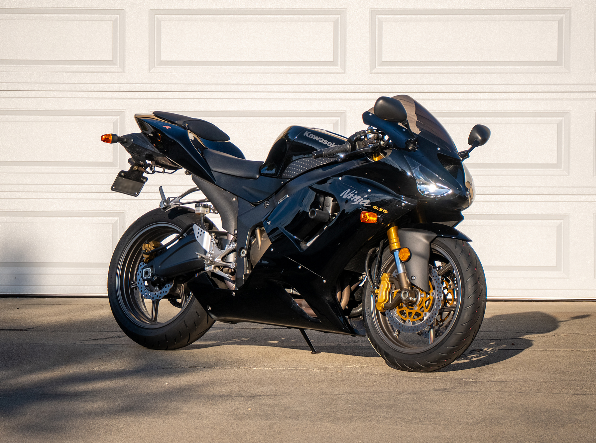
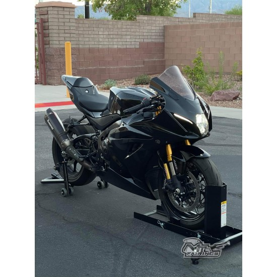
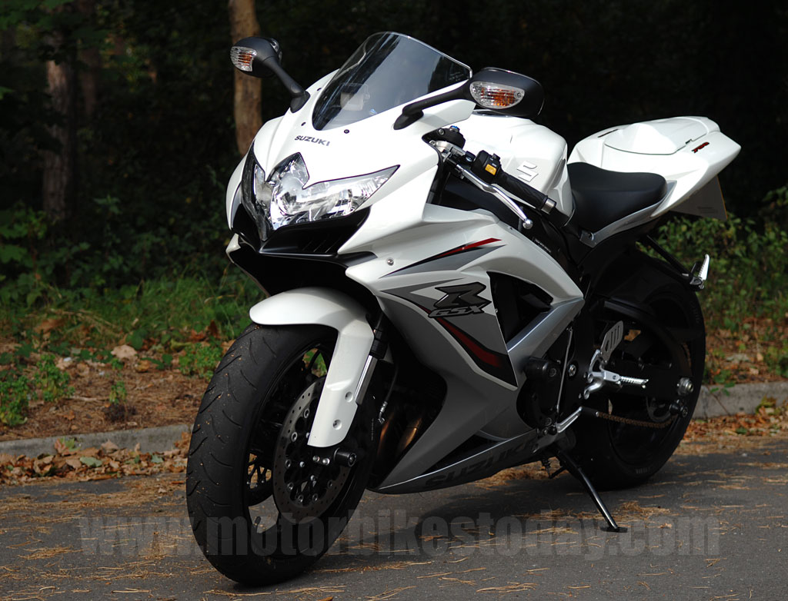
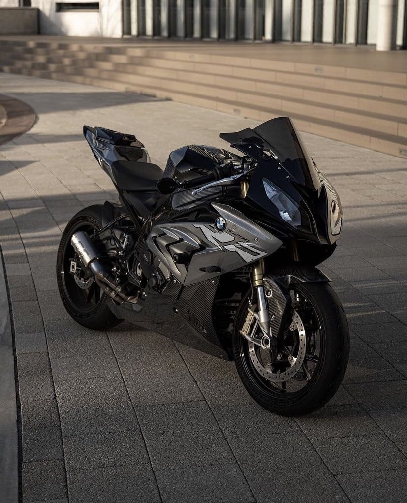
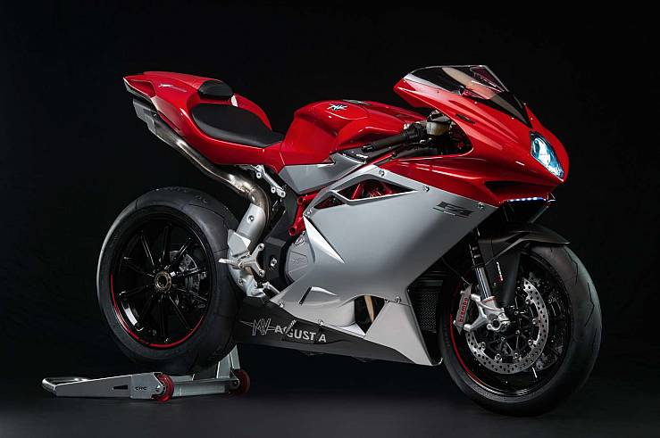

| Nombre de la Motocicleta | Imagen |
|---|---|
| 1. BMW S1000RR 2024-2025 |  |
| 2. DUCATI V4 SUPERLEGGERA 2022 |  |
| 3. YAMAHA R1M 2022 |  |
| 4. ZX6R 2006 Y 2019 |  |
| 5. GSXR1000RR 2020-2026 |  |
| 6. ZX10RR 2020-2026 | |
| 7. GSXR750 2019 |  |
| 8. BMW S1000RR 2017 |  |
| 9. MV AGUSTA F4 |  |
| 10. HONDA CBR1000RR-R FIREBLADE |
¿Quieres ver estas máquinas en acción?
▶ Ver carrera destacada de WorldSBK en YouTube